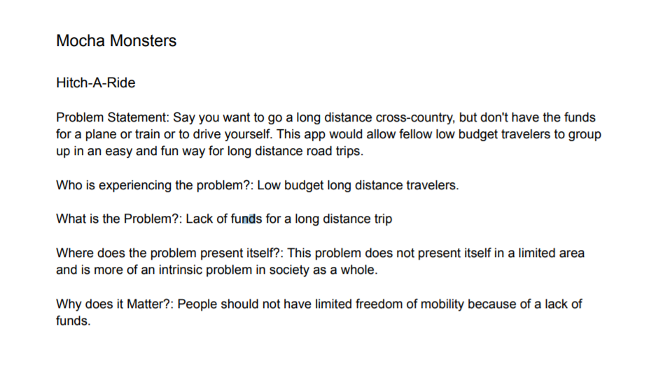
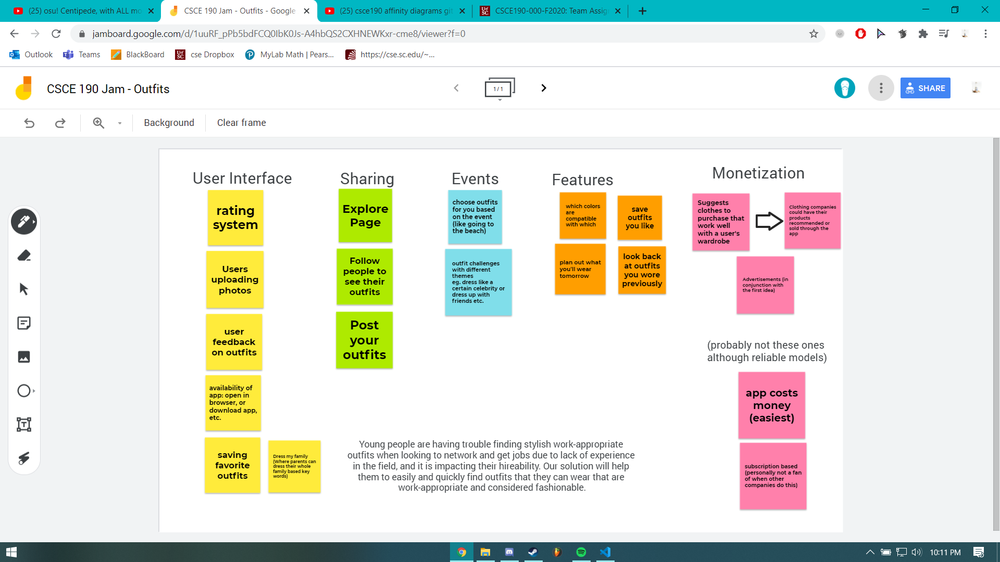
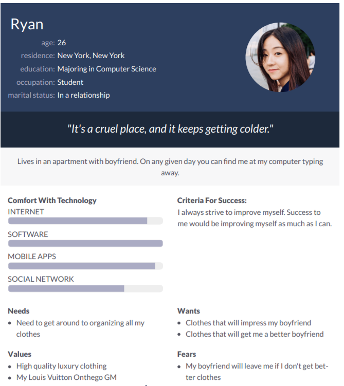
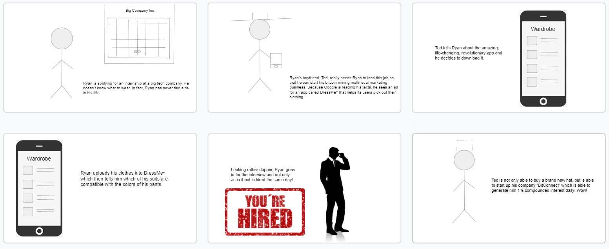
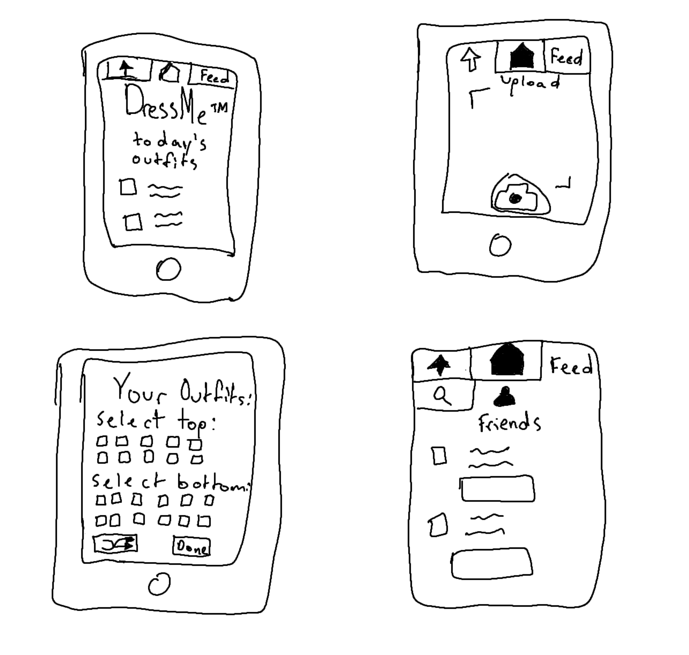
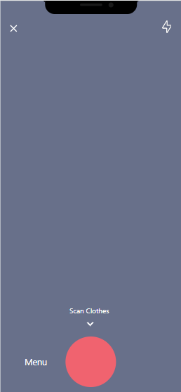

Young people are having trouble finding stylish work-appropriate outfits when looking to network and get jobs due to lack of experience in the field, and it is impacting their hireability. Our solution will help them to easily and quickly find outfits that they can wear that are work-appropriate and considered fashionable.
Link to our doc

Young people are having trouble finding stylish work-appropriate outfits when looking to network and get jobs due to lack of experience in the field, and it is impacting their hireability. Our solution will help them to easily and quickly find outfits that they can wear that are work-appropriate and considered fashionable.
Link to our doc

Young people are having trouble finding stylish work-appropriate outfits when looking to network and get jobs due to lack of experience in the field, and it is impacting their hireability. Our solution will help them to easily and quickly find outfits that they can wear that are work-appropriate and considered fashionable.
Link to the doc

A comic strip illustrating the need for an app that helps you pick our your clothes.
Link to the doc

Sketches detailing how our app might possibly look.
Link to the pdf

Prototype detailing how our app might possibly look and be used.
Link to the prototype.
Prototype detailing how our app might possibly look and be used.
Link to the prototype.